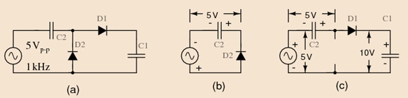

The half-wave voltage doubler shown in figure below (a) is composed of two circuits: a clamper at (b) and peak detector (half-wave rectifier) in Figure prior, which is shown in modified form in (c). C2 has been added toa peak detector (half-wave rectifier).
|  |